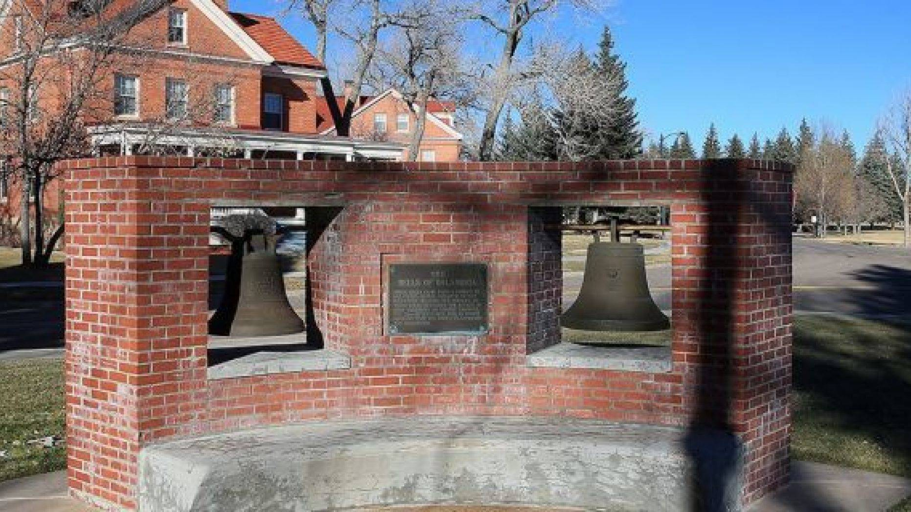
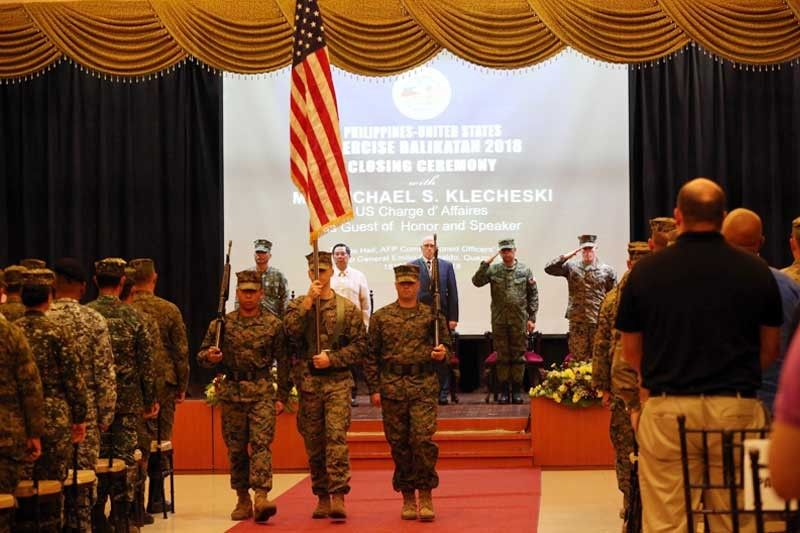

"Balangiga Bells back in Philippines after 117 years"
MANILA - Three church bells taken by American soldiers as war booty from Balangiga town,
Eastern Samar in 1901, arrived in the Philippines on Tuesday.
The Balangiga Bells, seen by historians as a symbol of Filipino resistance to foreign invaders,
were airlifted to the Philippine Air Force headquarters in Villamor Airbase.
They will be returned to Balangiga town later this week.
"It has been a very long road home.
Many Filipinos and Americans worked tirelessly for decades
to make today possible. I’m so glad many of them are here today,
" US Ambassador Sung Kim said during the handover ceremony at the airbase.
The US troops took 3 church bells as war trophy,
displaying 2 of them in a museum in Fort Russell,
Wyoming and another at a museum in South Korea
Efforts to retrieve the bells were made as early as 1957,
when Fr. Horacio de la Costa requested their return to Chip Wards,
Command Historian of the 13th Air Force in San Francisco, California.
A petition by the Balangiga Historical Society for the bells' return in 1989 failed
despite help from the National Historical Institute
and the Department of Foreign Affairs.
In 1994, then-US President Bill Clinton gave a verbal promise
to return the bells to then President Fidel V. Ramos,
"in the spirit of fair play." But some US officials opposed Clinton's offer.
Efforts would continue to make the US return the bells,
with some private groups like the US-Philippines Society helping,
President Rodrigo Duterte assumed office.
"US ‘coldness’ preventing Duterte from visiting Washington"
MANILA, Philippines – The “coldness” in the United States is stopping
President Rodrigo Duterte to visit Washington even after the return of the
Balangiga Bells, Malacañang said Wednesday.
“What I know is he really doesn’t want to go to the US apart from
whatever reasons he has in mind. He cannot stand the temperature, the
coldness. He really doesn’t like it when it’s really cold,” Presidential
Spokesperson Salvador Panelo said in a Palace briefing.
Foreign Affairs Secretary Teodoro Locsin Jr. had earlier said
Mr. Duterte would never visit the US until the historic Balangiga
Bells are returned to the Philippines.
Duterte called for the return of the bells during his 2017 State of the Nation Address
Duterte’s relationship with the US,
a longtime ally of the Philippines
turned sour during the term of former US President Barack Obama,
who has criticized the Duterte administration’s brutal war on drugs.
His relationship with Washington,
however, improved after Mr. Donald Trump,
whom he considers his “good friend,” assumed the US presidency.
Duterte has time and again said he would never visit US again,
even claiming at one time his hectic schedule
was stopping him from visiting America.
"Trillanes leaves Philippines for Europe trip"
MANILA - Senator Antonio Trillanes IV left the country for the
Netherlands early Tuesday morning, just a day after he posted bail for libel charges.
Trillanes boarded EVA airlines flight 262 bound for Netherlands
via Taipei after nearly one hour with Immigration authorities at
the Ninoy Aquino International Airport Terminal 1.
The senator flew to Europe with close-in security.
He was sent off by a private lawyer who was given
departure access pass at the Manila airport.
He is bound for the Netherlands, Spain and the UK
from December 11, 2018 to January 12, 2019.
will also leave for the US on January 27, 2019 to February 10, 2019
as part of his official duty.
On Monday, the prosecutor handling the inciting to
sedition case against Trillanes withdrew the Department of Justice's
Justice's motion for the issuance of a hold departure order for "lack of witness."
On that day too, Trillanes also posted a total of P96,000 bail
before a Pasay court for 4 counts of libel filed
President Rodrigo Duterte's son, Paolo.
The libel case stemmed from the senator's accusation
that the younger Duterte and the President's son-in-law,
Manases Carpio, of being involved in a scheme
scheme to extort money from ride-hailing firms.

‘Most Filipinos believe US will defend Philippines from invasion’ – SWS
MANILA, Philippines – Six in 10 Filipinos believe the US will defend the Philippines
in case of an invasion by another country,
according to a recent survey by the Social Weather Stations (SWS) released yesterday.
The survey, conducted from June 27 to 30, found 61 percent of adult Filipinos who expressed
elief that the US will defend the Philippines.
Of the 61 percent, 31 percent “strongly believe” while 30 percent “somewhat believe.”
Nine percent of them did not believe, of which six percent “somewhat”
did not believe and three percent “strongly” did not believe.
Thirty percent of the respondents were undecided.
The SWS asked the respondents the question:
“How much do you believe or not believe that the United States will defend
the Philippines in case we are invaded by another country?”
The proportion of those who believe that the US will defend the Philippines in case of invasion by another country was
highest in balance Luzon at 70 percent, followed by Metro Manila at 64 percent, the Visayas
at 54 percent and Mindanao at 48 percent
It was higher in overall urban areas at 66 percent, compared to overall rural areas at 56 percent.
It hardly varied by class, ranging from 60 percent to 65 percent, the SWS said.
It was slightly higher among elementary graduates and above, ranging from 61 percent
to 69 percent compared to non-elementary graduates at 53 percent.
The June 2018 survey also found 47 percent who were aware of the Philippines-US Mutual Defense Treaty (MDT)
even before the survey while 53 percent learned about it only during the interview.
Belief in the US defense commitment is stronger among those
previously aware of the MDT, the pollster said.
Among those aware of the MDT even before the survey, 80 percent believed that
the US will defend the Philippines in case of an invasion.
Of the 80 percent, 48 percent strongly believe, 32 percent somewhat believe.
Among those who became aware of the defense agreement on account of the survey, 45 percent believed – 17 percent strongly believed
and 28 percent somewhat believed – in the US defense commitment.
Awareness of the treaty was highest in Metro Manila,
urban areas, among the upper classes and among the more educated groups.
The proportion of those previously aware of the defense pact was highest in Metro Manila at 58 percent,
followed by balance Luzon at 53 percent, the Visayas at 41 percent and Mindanao at 31 percent.